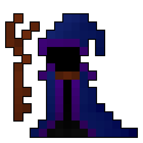

The Overseer
The master shall fall. But he is a puppet, and I, the puppeteer.
The Overseer, head of The Looking Tower, sits alone staring out across the vast realm, populated with beings he moulded from material from below. His experiments draw power from the void, but what is down there? He does not remember, nor does he care. Some days he ponders, do I control it, or it me?
Stats
HP: 300,000
DEF: 30
Immune to Stun
Immune to Paralyse
Immune to Stasis
Description
The Overseer is a boss-dungeon on a higher tier than Shaitan / Puppet Masters. It draws many paralells to other Boss-Only dungeons such as the Puppet Master and Oryx. The Overseer has a high HP making him somewhat comparable to The Nest Boss Fight.
We can all agree that an Oryx 1 in a small group is a fun and rewarding experience. However Oryx was designed for a community much smaller in size than it is today. The Overseer is in constant reference to Oryx, and this is no accident, the design of the Overseer is such that it should provide a similar experience to Oryx in a large group.
Location
...
Shots
| Projectile | Damage | Effect | Range | Speed | Comments |
|---|---|---|---|---|---|
| 0 | Petrify for 10 seconds | 20 Tiles | 40 Tile/sec | Staff Shot A Pierces Players |
|
| 200 | - | 20 Tiles | 2.5 Tile/sec | Staff Shot B Pierces Players |
|
| 200 | Weak for 30 seconds | 20 Tiles | 2 Tile/sec | Staff Shot C Pierces Players |
|
| 60 | - | 4 Tiles | 10 Tile/sec | Limon Spirit Skates Amplitude: 1 Frequency: 0.5 |
|
| 120 | - | 8 Tiles | 20 Tile/sec | Limon Spirit Bolts Amplitude: 1 Frequency: 0.5 |
|
| 200 | Weak for 10 seconds | 7 Tiles | 10 Tile/sec | Limon Spirit Discharge | |
| 80 | Paralyse for 1 second Stun for 2 seconds |
20 Tiles | 5 Tile/sec | Stheno Spirit Spirals |
Phases
The Overseer has phases similar to that of Oryx 1. Having set start and rage sequence, while the rest of his phases are chosen randomly. This makes for an interesting and unique fight each time. It helps to alleviate the highly structured, but repetitive, fights that involve many damage thresholds.
Start Phase
Random Phases
The overseer will select a random phase from the list below, each phase has an accompanying taunt which is said as the phase begins. Each phase lasts for about 30 seconds unless otherwise stated.
Staff Blast
I have wrangled with the great force beneath, you cause me no trouble.
The staff blast phase is a phase designed to weaken players and force them into recovery. Players are forced into taking damage in this phase. The Overseer becomes invulnerable and after a small delay fires out a 60 shot radial of Staff Shot A. It then shoots a 36 shot radius of Staff Shot B, and one of Staff Shot C, these are angled slightly differently from each other. Anyone under 10 tiles is guaranteed to be hit by the the petrify, and those over 10 tiles are less likely to be hit. The damaging staff shots will reach the petrified players before the effect ends. If not hit it will pose a significant hazard.
This phase has an accompanying animation:
Note: this phase is the one I am the most indecisive about, it ruins the possibility of all low level runs, and under certain conditions may ruin runs for individuals. I will include this phase at the top for some more exposure.
Spirit of Sprite
You are no match for the agility I command.
As the taunt and name suggest, this phase takes inpiration from Limon the Sprite Goddess's attacks and behaviours, specifically her first phase. Limon's first phase could called forgettable by anyone with a maxed character. With some punch behind her attacks she could really keep you on your toes, he is the realisation of that dream.
The overseer returns to the centre of the room and becomes invulnerable. In each corner of the room, on top of the void, Limon will spawn. The sprites spiral around the Overseer, upon reaching him they decay, with the animation below. After his sprites decay The Overseers flashes blue for a moment and then becomes vulnerable and begins the phase.
The Overseer begins following players at speeds equal to that of the average maxed player. Firing 8 Limon Spirit Skates directly behind it, arc gap 4°, rapidly. Meanwhile it is also firing 8 Limon Spirit Bolts forward at an 8° arc gap regularly. The Overseer will randomly charge towards the nearest player and fires two sets of 5 Limon Spirit Discharges. These are angled as to not hit the charged player, however they will cause disruption to a spread out group.
In this phase modified Limon Elements are thrown onto players. These act similarly to quiet bombs in Oryx's Castle as they explode upon landing. They shoot 0 damage shots which Weak and Silence (as in TP Invulnerability) for 20 seconds.
Spirit of Snake
This is a game of numbers, but I have them all.
This phase is reminiscent of Stheno the Snake Queen and the Snake Pit in general. To the Snake Pis's target audience the overwhelming amount of snakes will quickly overrun many characters. I, personally, would like to think that maximising graves is the goal of all dungeons, so it only fair that I should revive the numbers which made snake pit so intense.
As with the previous phase, The Overseer returns to the centre of the room and becomes invulnerable. In each corner of the room Stheno will spawn. Spiralling around the Overseer as before. The phase begins after the snakes decay with the following animation.

In this phase The Overseer shoots out Puppet Encore-esc spirals of Stheno Spirit Spirals, however because of the increased speed they are slightly more frequent. I suggest you get your damage now, soon an impressive bulwark of Formless Matter shall rush to there master, rendering any non piercing classes useless.
As promised the bulwark arrives. Formless Matter starts pouring out of the corner of the rooms onto The Overseer, upon reaching him the Formless Matter takes transforms into a random Formless Minion. For those who don't open the page, these are basically random minions, which preform basic actions. Such actions are, defend, attack, apply status.
Spirit of Demon
So? Do you wish to see stunts of strength?
The Demon referenced in this phase is Archdemon Malphus of the Abyss, the same sequence as before occurs with the below decay animation. Whilst renowned for not being an incredibly difficult boss Malphus physically appears the strongest of many of the games bosses. The Archdemon will here represent a fight of strength and numbers, and all the things the bulk of his main fight lacks.

Rage Phase
Death
You disturb the balance of The Realm, my death makes your quest no easier
Upon death The Overseer says some dialogue, he then shoots an invisible bullet with purple particle effects towards each corner before finally dropping loot.